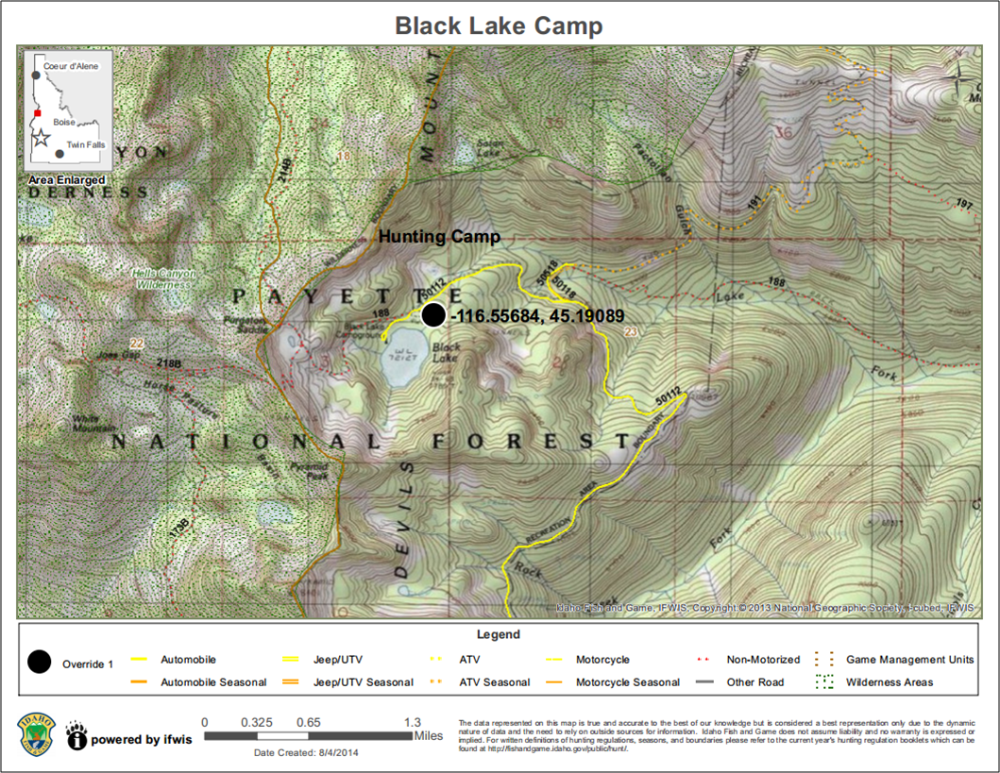

CREATE Printable MAP
Create a PDF or PNG of the map for printing or sharing. Once the tool is activated, you can enter a title for your map (optional). Also, you can choose one of 4 print layouts: 8x11 Landscape, 11x17 Landscape, 8x11 Portrait, or 11x17 Portrait and 1 or 2 print formats: PDF or PNG(image). Click the 'Create Map!' button. While the PDF/PNG is being generated, you will see 'Creating Map.." and an animated loading image. When the PDF/PNG is ready, "CLICK HERE TO DOWNLOAD MAP" will appear in the print window. Click the hyperlink to open your PDF/PNG in a new window. Depending on the browser and device you are using, you will be able to save or print the PDF/PNG for use later by using the browser menu or right-clicking the PDF/PNG. The PDF/PNG created will include: a user-specified title, date of creation, legend, scale bar, a state locator map, esri basemap copyright information, and IDFG IFWIS copyright and disclaimer.
NOTE: This tool WILL NOT PRINT Google Basemaps. When creating a printable map, please select a basemap from the top two rows.

Created with the Personal Edition of HelpNDoc: Easy EPub and documentation editor